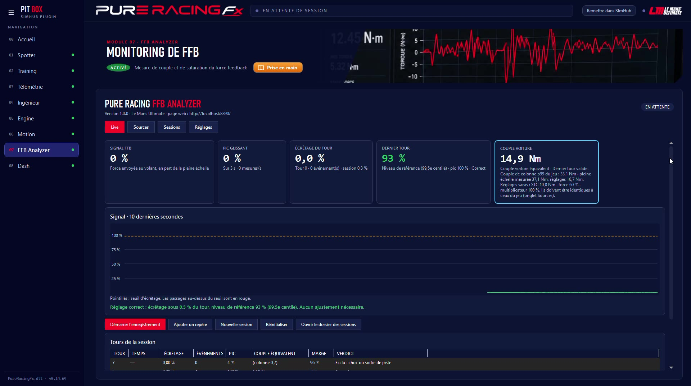

FFB Analyzer mesure le signal de force feedback pendant que tu roules : la part du tour passée en écrêtage, la marge qui te reste, le couple de la voiture. Tu sais si ton réglage sature, et de combien.
Le signal des 10 dernières secondes, et pour chaque tour un verdict clair.

Correct : ton FFB garde ses détails.
À surveiller : le signal sature par moments.
Écrêtage excessif : baisse la force dans le jeu.
| Point | Ce qu'il faut savoir |
|---|---|
| Ce qui est mesuré | Le signal FFB que le jeu publie, pas le couple produit par ta base : l'écrêtage de son pilote n'est pas vu. |
| Jeux | Le Mans Ultimate, rFactor 2, Assetto Corsa (et les jeux qui publient leur FFB dans SimHub). |
| Sessions | Chaque séance est enregistrée : tu compares tes réglages d'un jour à l'autre. |
| Tablette | Une page de suivi en direct s'ouvre sur une tablette ou un téléphone du même Wi-Fi. |
Des tableaux de bord SimHub pour tous les styles de pilotage.